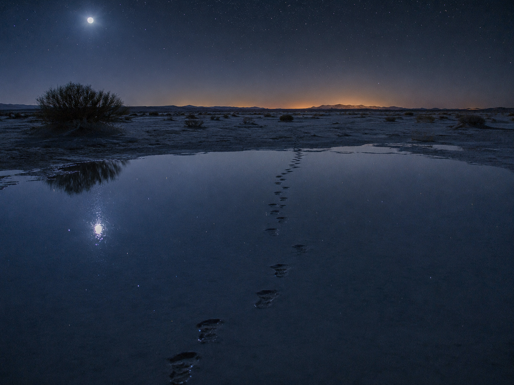

░░░░░░░░░░░░░░░░░░░░░░░░░░░░░░░░░░ · D E S C E N T · 01 / 40 · ░░░░░░░░░░░░░░░░░░░░░░░░░░░░░░░░░░

You were on the surface.
The surface is a lid.
The only way down is the address bar.
Find a word. Make it the page name.
ghost.html becomes word.html